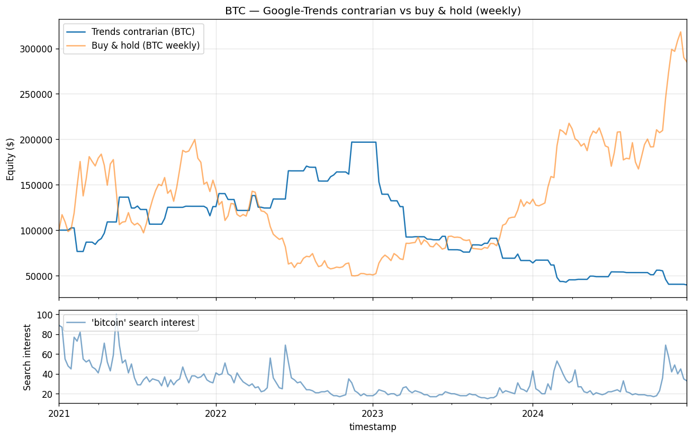

A standardized Google Trends signal that degenerates into a price-mean-reversion rule, and the negative backtest that follows.
Compiled 2026-05-28 · Weekly BTC-USD, 2021–2024
We test whether retail search attention, proxied by Google Trends interest in the query bitcoin, carries a tradeable contrarian signal at weekly resolution. The premise is standard in the attention-and-sentiment literature: extreme search interest may flag a crowded, mean-reverting regime, so a spike in attention should precede a near-term price decline (short) and a trough should precede a recovery (long). We standardize the attention series with a four-week rolling z-score and trade the contrarian rule on BTC-USD over 2021–2024 (209 weekly bars). The strategy loses money: annualized return −20.5%, Sharpe −0.30, Sortino −0.42, maximum drawdown −79.8%, hit rate 26.4%. We argue this is not bad luck but a structural artefact. Because attention is a near-monotone function of price, the positive scale factor cancels under standardization and the z-score of attention collapses, to first order, onto the z-score of price — the contrarian rule is a price-based mean-reversion rule in alt-data costume. The signal is coincident, not leading: attention and the return realize together, leaving no exploitable sign at the tradeable horizon \(k\ge 1\). With \(\widehat{SR}=-0.30\pm0.51\) the result is statistically indistinguishable from zero, and none of the three rule variants survives a multiple-testing haircut. We ship the negative result in full.
Keywords. attention, Google Trends, alternative data, Bitcoin, contrarian, mean reversion, coincident indicator, Sharpe ratio, multiple testing, negative result.
Attention is a scarce resource, and the economics of attention has become an empirical asset-pricing program. Da, Engelberg and Gao (2011) showed that direct search-volume measures predict short-run returns and reversals in equities; Preis, Moat and Stanley (2013) found that Google Trends queries on financial terms preceded moves in the Dow. The hope animating this paper is the same one that animates the alt-data industry: that the aggregate gaze of retail participants, captured before it shows up in prices, is informative about what prices will do next.
A first distinction is essential. As a level, search interest in bitcoin is almost certainly uninformative: it tracks price so tightly that the two series are nearly monotone transforms of one another, and a feature that is a deterministic function of price adds nothing to a price-based strategy. The interesting object is the anomaly — attention measured against its own recent baseline. The hypothesis we test is contrarian: an attention spike relative to baseline signals retail FOMO and an over-extended tape, so the near-term return should be negative (go short); an attention trough signals disinterest and capitulation, so the near-term return should be positive (go long).
The result is unambiguously negative, and the value of the exercise lies in understanding why. We show analytically that standardizing a price-coincident series does not manufacture a non-price signal: it removes the level (the part everyone agrees is uninformative) but leaves a residual that, at weekly resolution with a short lookback, is dominated by ordinary price reversal. The contrarian rule is therefore a disguised price-mean-reversion rule, and it loses for the same reason naive weekly mean-reversion on BTC loses over this window.
The price series is BTC-USD daily close from yfinance, resampled to a Sunday-end weekly grid by taking the last observation of each week. The attention series is global Google Trends interest in the query bitcoin, retrieved weekly via pytrends. The sample window is 2021-01-01 to 2024-12-31, yielding \(N=209\) weekly bars after alignment.
Two data caveats deserve emphasis. First, Google Trends values are relative: each series is rescaled to the interval \([0,100]\) where \(100\) is the peak interest within the queried window, and the normalization changes when the window changes. To avoid the silent rescaling that occurs when stitching short queries, the loader issues a single query spanning the full window and caches the response, so all 209 observations live on one consistent \([0,100]\) scale. Second, the engine is lookahead-safe by construction: the standardization at week \(t\) uses only observations through week \(t\), and the resulting position is executed with a one-week lag (Section 5). No future information enters the signal.
Let \(A_t\) denote weekly search interest. We standardize \(A_t\) against a four-week trailing window using the rolling mean \(\mu_t\), population standard deviation \(\sigma_t\), and the resulting z-score:
\begin{equation} \mu_t=\frac14\sum_{k=0}^{3}A_{t-k},\qquad \sigma_t=\sqrt{\frac14\sum_{k=0}^{3}\bigl(A_{t-k}-\mu_t\bigr)^2},\qquad z_t=\frac{A_t-\mu_t}{\sigma_t}. \end{equation}The central claim of this paper is methodological: standardizing a price-coincident series does not produce a non-price feature. Suppose attention is a monotone increasing function of price plus idiosyncratic noise,
\begin{equation} A_t=\varphi(P_t)+\eta_t,\qquad \varphi'>0, \end{equation}a functional form consistent with the very high Spearman rank correlation \(\rho_S(A_t,P_t)\) observed between the two series. Over a short rolling window the price excursion \(P_t-\bar P_t\) is small, so a first-order Taylor expansion of \(\varphi\) about the local mean price \(\bar P_t\) gives
\begin{equation} A_t-\mu_t\;\approx\;\varphi'(\bar P_t)\,\bigl(P_t-\bar P_t\bigr),\qquad \sigma^A_t\;\approx\;\varphi'(\bar P_t)\,\sigma^P_t, \end{equation}where \(\bar P_t\) and \(\sigma^P_t\) are the four-week rolling mean and standard deviation of price and we have suppressed the small noise term \(\eta_t\). Forming the z-score, the positive scale factor \(\varphi'(\bar P_t)>0\) appears identically in numerator and denominator and cancels:
\begin{equation} z^A_t=\frac{A_t-\mu_t}{\sigma^A_t}\;\approx\;\frac{\varphi'(\bar P_t)\,(P_t-\bar P_t)}{\varphi'(\bar P_t)\,\sigma^P_t}=\frac{P_t-\bar P_t}{\sigma^P_t}=z^P_t. \end{equation}The cancellation also explains why the noise term is benign for the degeneracy argument: \(\eta_t\) perturbs \(z^A_t\) away from \(z^P_t\), but any such perturbation is, by construction, independent of price and hence cannot supply a price-predictive edge. What remains after standardization is either price (which we already have) or noise (which we cannot trade).
Whether attention is useful reduces to a question about timing. Define the lag-\(k\) cross-correlation between the standardized attention signal and forward returns,
\begin{equation} \rho_k=\operatorname{corr}\!\bigl(z^A_t,\;R_{t+k}\bigr),\qquad R_t=\frac{P_t}{P_{t-1}}-1. \end{equation}A genuinely leading signal carries predictive mass at horizons \(k\ge 1\); for a contrarian sign this means \(\rho_k<0\) for some tradeable \(k\ge 1\). A coincident indicator concentrates its mass at \(k=0\) with \(\rho_{k>0}\approx 0\) — attention and the return realize in the same bar. A lagging one peaks at \(k<0\). The contrarian hypothesis is the assertion \(\rho_{k\ge 1}<0\); the negative backtest below is the empirical rejection of that assertion. Because \(z^A_t\approx z^P_t\) and weekly BTC returns are close to serially uncorrelated, the predictive mass that exists sits at \(k=0\): by the time a spike in \(z^A_t\) is observable, the price move that produced it has already happened. Equation (5) makes the failure mode concrete — the strategy is structurally unable to harvest a \(k=0\) coincidence with a \(k\ge 1\) execution.
We use the catalogue's shared evaluation battery, noted here once. With simple return \(R_t=P_t/P_{t-1}-1\) and discrete weight \(w_t\in\{-1,0,+1\}\), positions execute with a one-bar (one-week) lag and incur a per-unit-turnover cost \(c\). The net strategy return and equity are
\begin{equation} r^s_t=w_{t-1}R_t-c\,\lvert w_t-w_{t-1}\rvert,\qquad E_t=E_0\prod_{\tau\le t}\bigl(1+r^s_\tau\bigr), \end{equation}with \(c=5\text{ bp}\) (2 bp commission + 3 bp slippage). Performance statistics, with \(P=52\) periods per year:
\begin{align} \widehat{SR}&=\frac{\bar r^s}{s}\sqrt{P}, & \mathrm{Sortino}&=\frac{\bar r^s}{\sigma_d}\sqrt{P},\quad \sigma_d=\sqrt{\tfrac1N\textstyle\sum_t\min(r^s_t,0)^2},\\ \mathrm{MDD}&=\max_t\Bigl(1-\frac{E_t}{\max_{\tau\le t}E_\tau}\Bigr), & \widehat\pi&=\frac1N\textstyle\sum_t\mathbf 1\{w_{t-1}R_t>0\}. \end{align}Sharpe standard errors follow Lo (2002) under the iid approximation,
\begin{equation} \mathrm{SE}\bigl(\widehat{SR}\bigr)\approx\sqrt{\frac{1+\tfrac12\,\widehat{SR}^{\,2}}{T}}, \end{equation}with \(T\) the sample length in years.
The contrarian rule loses across every dimension and never recovers its early drawdown.

Table 1. Headline performance of the contrarian rule (weekly BTC-USD, 2021–2024, \(N=209\)).
| Metric | Value |
|---|---|
| Annualized return | −20.5% |
| Sharpe ratio | −0.30 |
| Sortino ratio | −0.42 |
| Max drawdown | −79.8% |
| Hit rate | 26.4% |
| Bars (weekly) | 209 |
The 26.4% hit rate is the tell: the rule is on the wrong side of the move roughly three weeks in four. This is exactly what equation (4) predicts — by shorting standardized price strength and buying standardized price weakness on a trending, momentum-dominated asset over this window, the strategy systematically fades the direction that subsequently persists.
A natural defence is that we simply chose the wrong sign or the wrong directionality. We therefore evaluate three framings of the same standardized signal.
Table 2. Robustness across rule variants (same signal, same costs, same window).
| Variant | Sharpe | Ann. return | Max drawdown |
|---|---|---|---|
| Contrarian (this model) | −0.30 | −20.5% | −79.8% |
| Momentum (long/short, inverse rule) | +0.24 | +0.8% | −73.6% |
| Momentum (long-only) | +0.44 | +9.9% | −69.5% |
Flipping the sign to momentum turns the point estimate positive, consistent with the degeneracy story — the same standardized series, traded with the prevailing price move rather than against it, is no longer guaranteed to fade momentum. But "less negative" is not "tradeable", as the next section makes precise.
The sample spans \(T=209/52\approx 4.0\) years. Substituting the contrarian point estimate into equation (10),
\begin{equation} \mathrm{SE}\bigl(\widehat{SR}\bigr)\approx\sqrt{\frac{1+\tfrac12(0.30)^2}{4.0}}=\sqrt{\frac{1.045}{4.0}}\approx 0.51. \end{equation}The strongest variant — long-only momentum at Sharpe +0.44 and +9.9% annualized — is still untradeable on a risk-adjusted basis. Its Calmar ratio, annualized return over the magnitude of maximum drawdown, is
\begin{equation} \mathrm{Calmar}=\frac{9.9\%}{69.5\%}\approx 0.14, \end{equation}meaning the investor endures a 70% peak-to-trough loss to earn under 10% per year — a payoff dominated by simply holding cash. More fundamentally, having tried contrarian, then long/short momentum, then long-only momentum is a multiple-testing exercise. With \(K\) independent trials the expected maximum in-sample Sharpe is inflated even under the null of zero true edge; the order statistic of \(K\) draws from a zero-mean distribution grows roughly like \(\sqrt{2\ln K}\) in standard-error units. The Deflated Sharpe Ratio of Bailey and López de Prado (2014) and the multiple-testing haircut of Harvey, Liu and Zhu (2016) both adjust the significance threshold upward for the number of configurations tried. Given the wide \(\mathrm{SE}\approx 0.51\) on a single test, none of the three variants — with raw Sharpes of −0.30, +0.24, and +0.44 — clears the deflated bar. The honest reading is that no framing of this signal yields a strategy worth deploying.
Three limitations bound the strength of the conclusion. First, the sample is small: \(N=209\) weekly bars over a single, unusually volatile BTC regime (the 2021 peak, the 2022 collapse, the 2023–2024 recovery), so the estimates carry wide confidence bands and the verdict is "no edge here", not "no edge anywhere." Second, the relative renormalization of Google Trends means the \([0,100]\) scale is window-specific; although we query once over the full window to keep the scale consistent, the absolute level is not comparable to a query over a different span, and any extension that re-queries must re-standardize. Third, the strategy is lookahead-safe by construction — the z-score at week \(t\) uses only data through \(t\) and trades with a one-week lag — so the negative result cannot be blamed on, nor rescued by, a leakage artefact.
Several extensions could plausibly recover a non-degenerate signal. (i) Higher resolution: daily Trends data, obtained by stitching overlapping multi-window queries and re-normalizing across the seams, would let attention and price decouple at the sub-weekly horizon where retail flow may genuinely lead. (ii) Cross-keyword structure: contrasting directional queries such as "buy bitcoin" against "sell bitcoin" or "bitcoin price" could isolate a sentiment direction rather than a sentiment magnitude, escaping the scalar degeneracy of equation (4). (iii) News and social signals whose timestamp can precede price — a headline or a viral post arrives before the trade — offer a structurally leading source that search interest, a reaction to price, does not.
Finally, why ship a negative result at all? A catalogue of only winners is a catalogue of overfit. This paper proves that the alt-data pipeline carries a genuine non-price signal end-to-end through the standard backtest harness — ingestion, lookahead-safe standardization, costed execution, and the full metric battery — and reports the numbers honestly, including the unflattering ones. The negative result is itself the deliverable: it documents a clean methodological trap (standardizing a price-coincident series) and the empirical evidence that the trap is real.